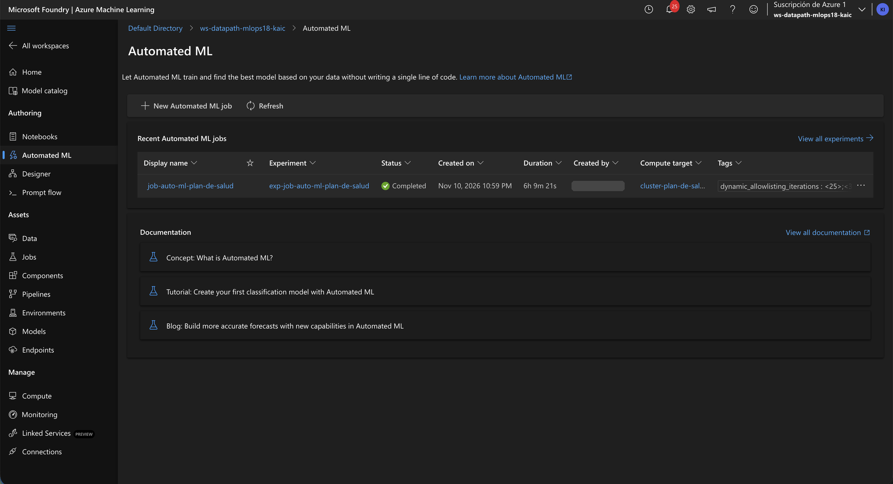
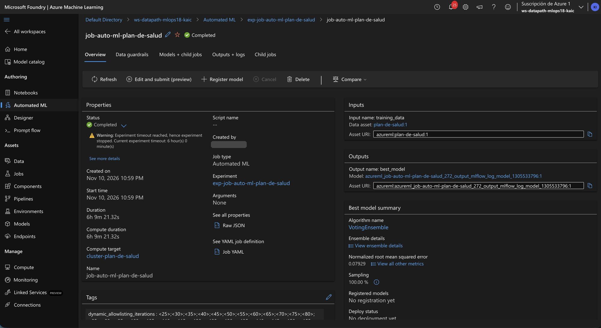
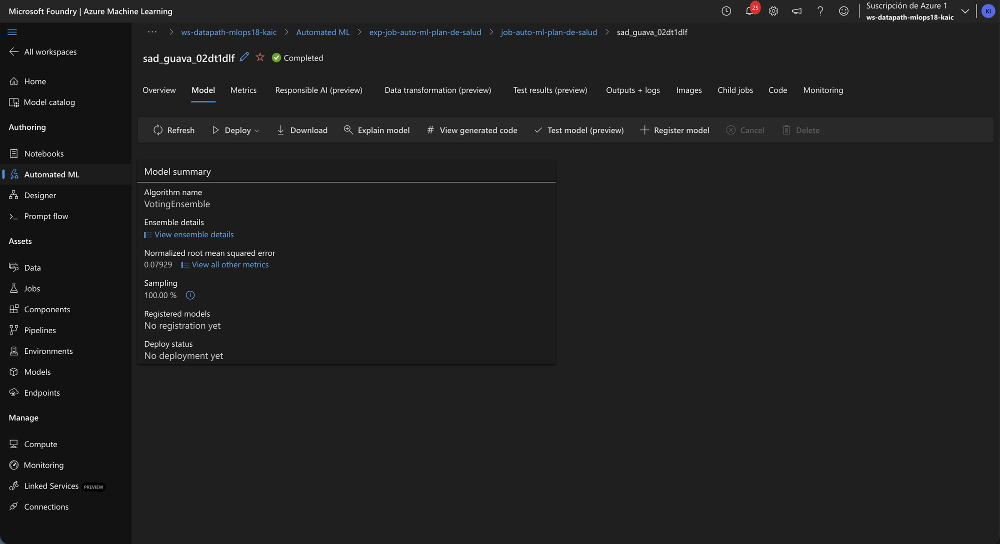
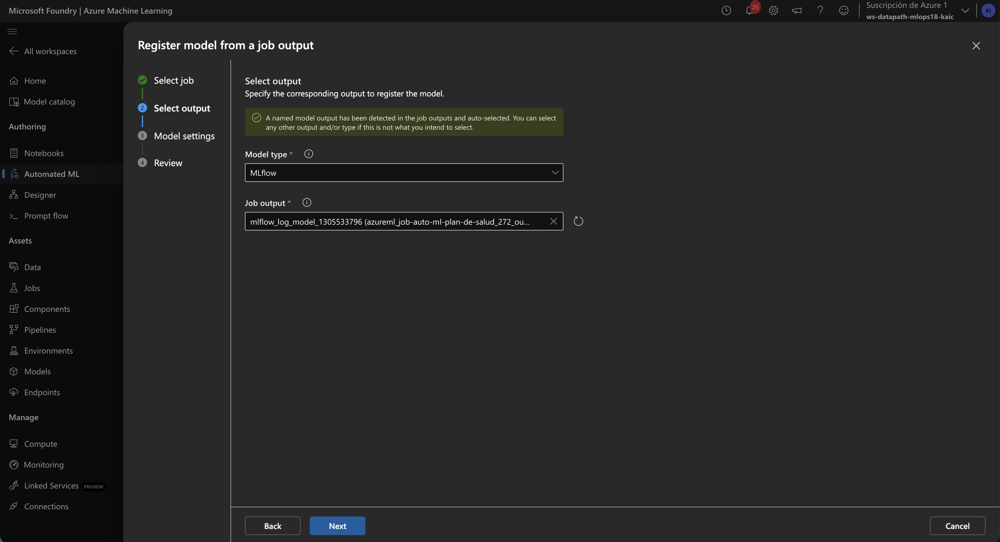
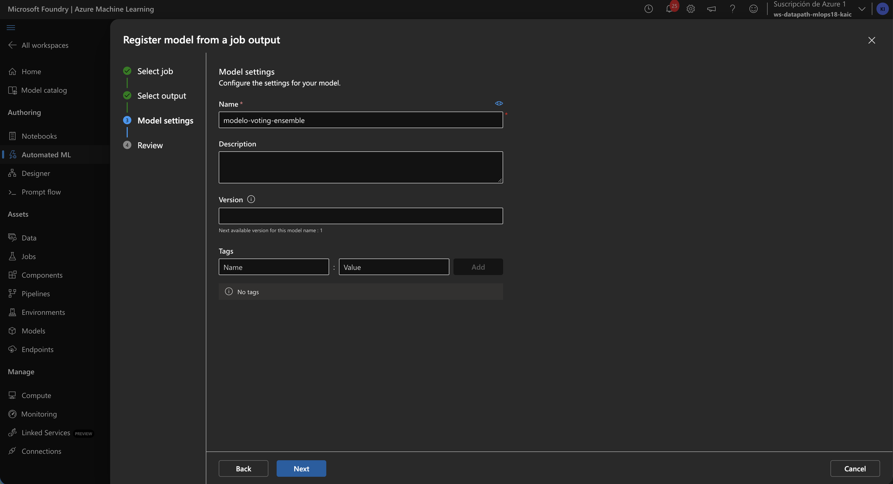
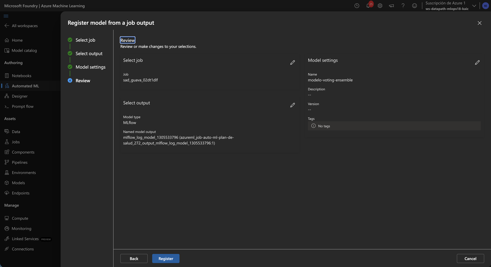
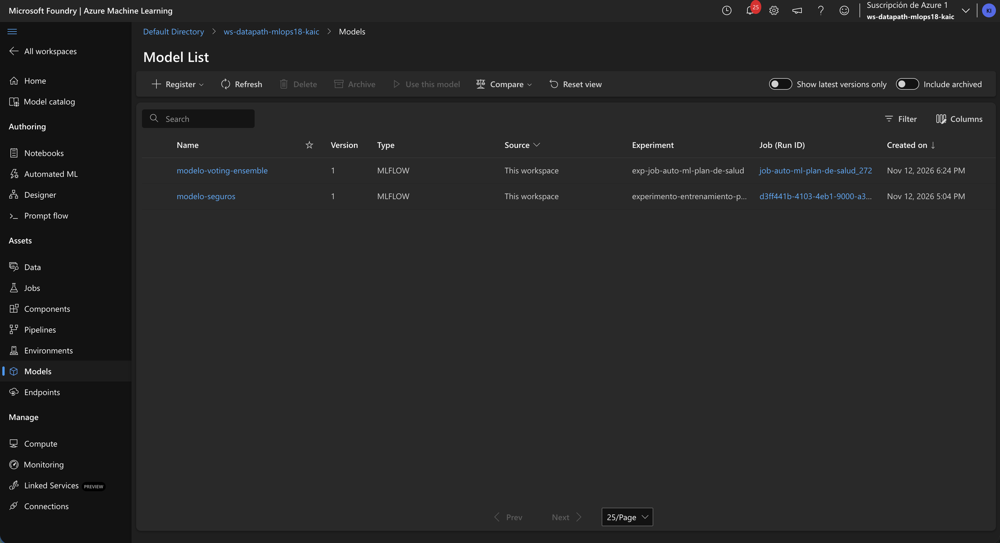
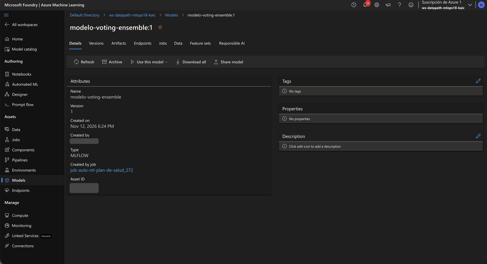
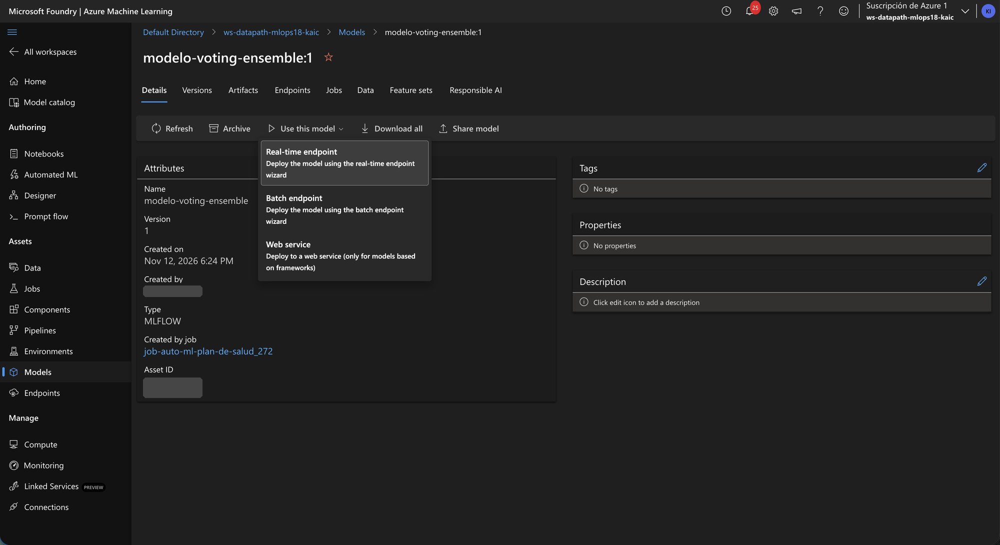
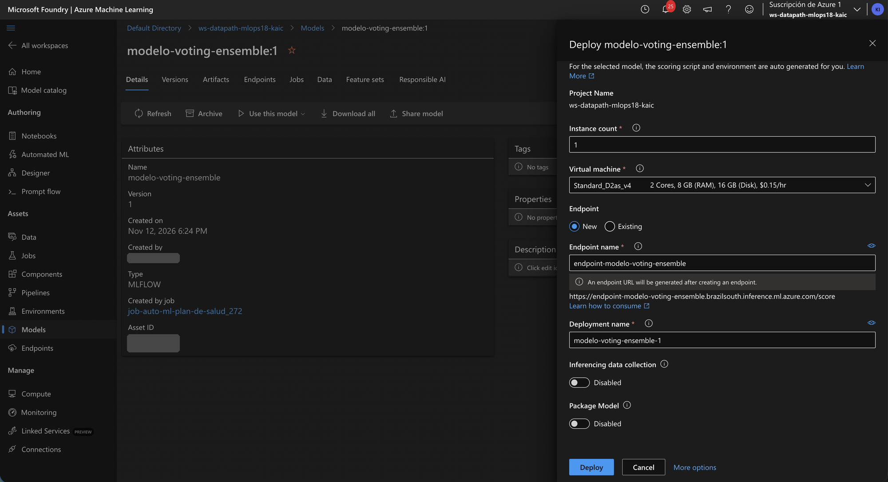

Designer Custom · Paso 4 · Registrar el modelo
Cada salida mlflow_model se guarda como modelo anónimo: nombre autogenerado, no aparece en tu lista de Models.
Deploy de la barra superior despliega el pipeline (batch, reentrena). Para predecir en tiempo real: Register model → Models → Use this model → Real-time endpoint.
Designer Custom · Paso 4 · Register model from a job output
Specify the corresponding output to register the model.
Nuestro componente declara la salida modelo como tipo mlflow_model. Azure la reconoce como modelo.
El modelo viaja con su entorno y su firma de entrada. Se despliega sin score.py.
Deja todo como está y dale Next. En Model settings ponle nombre: modelo-seguros.
Designer Custom · Paso 4 · Model settings
Es su identidad. Desde ahora es azureml:modelo-seguros:1.
Azure numera solo: hoy 1; el próximo registro con el mismo nombre será 2.
Pares clave : valor para filtrar y comparar versiones en Models.
Next → en Review revisa el resumen → Register.
Designer Custom · Paso 4 · Review
No copia nada: le pone nombre al mismo modelo que ya guardó el job.
Vacío significa automática: quedará como versión 1.
Register → aparece en Models como modelo-seguros:1. Siguiente: Use this model → Real-time endpoint.
Designer Custom · Paso 4 · Models
| Name | Version | Type | Source | Experiment | Job (Run ID) | Created on |
|---|---|---|---|---|---|---|
| modelo-seguros | 1 | MLFLOW | This workspace | experimento-entrenamiento-p… | d3ff441b-4103-… | Nov 12, 2026 5:04 PM |
Azure sabe cómo cargarlo y servirlo: despliegue sin código.
Linaje: desde el modelo llegas al job, los datos y los parámetros que lo crearon.
Siguiente: click en modelo-seguros → Use this model → Real-time endpoint.
Designer Custom · Paso 5 · Desplegar
API REST que responde al instante. Cobra por hora mientras esté prendido.
Puntúa archivos completos en lote; corre como job en un cluster.
Despliegue legado (SDK v1). No usarlo en proyectos nuevos.
Designer Custom · Paso 5 · Real-time endpoint
Azure arma el score.py y el entorno desde el modelo. Por eso el preprocesamiento va dentro del modelo.
Producción: 3 (alta disponibilidad). Clase: 1, cuesta un tercio.
El endpoint es la URL fija. El deployment es la versión que corre detrás; puedes tener varios y repartir tráfico.
Deploy → 8–15 min. Cobra $0.15/h mientras exista: bórralo al terminar.
Parte 2 · Automated ML
Mismo dataset, otro camino: AutoML probó cientos de algoritmos durante 6 horas. Lo registramos igual que modelo-seguros para desplegarlo y consumirlo.
Automated ML · Registrar el mejor modelo · 1/7

job-auto-ml-plan-de-salud · regresión sobre charges con plan-de-salud.
6h 9m: se detuvo por el timeout de 6 horas, no porque terminara de probar todo.
Automated ML · Registrar el mejor modelo · 2/7

Experiment timeout reached: es normal, el tope de tiempo lo pusimos nosotros.
Combina varios modelos y promedia sus predicciones. Click aquí para abrirlo.
Error normalizado por el rango de charges: menos es mejor.
Automated ML · Registrar el mejor modelo · 3/7

Mismo asistente que usamos con modelo-seguros.
También se puede desplegar directo, pero registrar primero le da nombre y versión.
Automated ML · Registrar el mejor modelo · 4/7

AutoML guarda el modelo como MLflow (mlflow_log_model_…). No cambies nada.
Pasa a ponerle nombre.
Automated ML · Registrar el mejor modelo · 5/7

modelo-voting-ensemble. Version vacía → 1.
Descripción y tags son opcionales (aquí quedaron vacíos).
Automated ML · Registrar el mejor modelo · 6/7

Apunta al modelo que AutoML ya guardó (job …_272). No se reentrena nada.
Listo en segundos.
Automated ML · Registrar el mejor modelo · 7/7

Hecho por Automated ML (exp-job-auto-ml-plan-de-salud).
Hecho por nuestro pipeline Custom. Ambos MLFLOW: se despliegan igual, sin score.py.
Automated ML · Desplegar el mejor modelo · 1/2

job-auto-ml-plan-de-salud_272: el linaje te lleva a la iteración ganadora.
El mismo botón que usamos con modelo-seguros.
Automated ML · Desplegar el mejor modelo · 2/2

Una app (Streamlit) pide una predicción y responde en ms. Cobra por hora prendido.
Puntúa un archivo entero como job en el cluster. Tarda minutos, pero no cobra cuando no se usa.
Automated ML · Desplegar el mejor modelo · Real-time endpoint

Igual que el modelo Custom. Si falta memoria, sube a Standard_D4as_v4.
endpoint-modelo-voting-ensemble: otra URL, otra key. Dos endpoints = ~$0.30/h.
Scoring script y entorno autogenerados: el entorno de AutoML ya trae los paquetes azureml-*.